xopto.mccyl.mclayer.layer module¶
- class Layer(d: float, n: float, mua: float, mus: float, pf: xopto.mcbase.mcpf.pfbase.PfBase)[source]¶
Bases:
xopto.mcbase.mcobject.McObjectClass that represents a single sample layer.
Layer object constructor.
- Parameters
d (float) – Layer diameter (m).
n (float) – Index of refraction.
mua (float) – Absorption coefficient (1/m).
mus (float) – Scattering (NOT reduced) coefficient (1/m).
pf (mcpf.PfBase) – Scattering phase function object that is derived from PhBase class.
The physical properties of the layer can be read or changed through member properties:
d: float - Layer diameter (m).
n: float - Index of refraction.
mua: float - Absorption coefficient (1/m).
mus: float - Scattering (NOT reduced) coefficient (1/m).
pf: mcpf.PfBase - Scattering phase function object that is derived from PhBase class.
Note
The inner layer boundary bellongs to the layer, but the outer does not.
- cl_type(mc: xopto.mcbase.mcobject.McObject) → xopto.cl.cltypes.Structure[source]¶
Returns a structure data type that is used to represent one Layer instance in the OpenCL kernel of the Monte Carlo simulator.
- Parameters
mc (mcobject.McObject) – Monte Carlo simulator instance.
- Returns
opencl_t – OpenCL Structure that represents a layer.
- Return type
ClLayer
- property d: float¶
Layer diameter (m).
- classmethod fromdict(data: dict) → xopto.mccyl.mclayer.layer.Layer[source]¶
Create a new object from dict. The dict keys must match the parameter names defined by the constructor.
- property mua: float¶
Absorption coefficient of the layer (1/m).
- property mus: float¶
Scattering coefficient of the layer (1/m).
- property n: float¶
Refractive index of the layer.
- property pf: xopto.mcbase.mcpf.pfbase.PfBase¶
Phase function object.
- class Layers(layers: List[xopto.mccyl.mclayer.layer.Layer])[source]¶
Bases:
xopto.mcbase.mcobject.McObjectClass that represents a stack of concentric layers forming the sample.
Note
The first layer of the stack is used to describe the medium that surrounds the sample. Therefore, at least two layers must be always specified, namely the layer of the surrounding medium and one sample layer! The diameter of the outermost layer (first in the list of layers) will be automatically set to infinity regardless of the layer diameter set by the user.
Constructs a managed sample layer stack from a list of sample layers. The outermost layer that sourrounds the sample must be specified first, followed by the sample layer from the outermost to the innermost.
Note
The first layer of the stack is used to describe the medium that surrounds the sample. Therefore, at least two layers must be always specified, namely one layer of the surrounding medium and one sample layer!
The layers extend to infinity along both directions of the z axis.
The diameter of the outermost layer will be automatically set to infinity when passed to the OpenCL kernel (regardless of the layer diameter set by the user).
The layer diameters must be monotonically decreasing. Layers of zero thickness (diameters of the previous and next layer are the same) are not allowed.
Note that all layers must use the same scattering phase function model.
- Parameters
layers (list or Layers) – A list of sample layers. Requires at least 2 items!
- check()[source]¶
Check if the layers are consistent and using a single scattering phase function type. Raises exception on error.
- cl_declaration(mc: xopto.mcbase.mcobject.McObject) → str[source]¶
OpenCL declarations of the scattering phase function.
- cl_implementation(mc: xopto.mcbase.mcobject.McObject) → str[source]¶
OpenCL implementation of the scattering phase function.
- cl_options(mc: xopto.mcbase.mcobject.McObject) → str[source]¶
OpenCL options of the scattering phase function.
- cl_pack(mc: xopto.mcbase.mcobject.McObject, target: Optional[_ctypes.Array] = None) → _ctypes.Array[source]¶
Pack the layers into an OpenCL data type. The OpenCL data type is returned by the
Layers.cl_type()method.- Parameters
mc (mcobject.McObject) – Monte Carlo simulator instance.
target (cltypes.Structure*len(self)) – A structure representing an array of Layers.
- Returns
target – Filled structure received as an input argument or a new instance if the input argument target is None.
- Return type
- cl_type(mc: xopto.mcbase.mcobject.McObject) → _ctypes.Array[source]¶
Returns an OpenCL array of ClLayer structures that is used to represent one instance of a layer stack.
- Parameters
mc (mcobject.McObject) – Monte Carlo simulator instance.
- Returns
clarray – Array of ClLayers.
- Return type
cltypes.Structure*len(self)
- diameter() → float[source]¶
Diameter of the layer stack excluding the outermost layer that sourrounds the sample.
- Returns
diameter – The sample diameter excluding the outermost layer of the surrounding medium.
- Return type
float
- classmethod fromdict(data: dict) → xopto.mccyl.mclayer.layer.Layers[source]¶
Create a new Layers object from a dict. The dict keys must match the parameter names defined by the constructor.
- intersect(pos: Tuple[float, float, float], dir: Tuple[float, float, float], entrance: bool = False) → Tuple[Tuple[float, float, float], Tuple[float, float, float]][source]¶
Intersect the sample with the ray and return the intersection. Intersection is considered to exist only if the distance to the intersection is positive or entrance is set to True
- Parameters
pos ((float, float, float)) – Ray origin.
dir ((float, float, float)) – Ray direction.
entrance (bool) – If True, compute the entrance point regardless of the current position of the ray (can be propagated backwards).
- Returns
intersection ((float, float, float) or None) – Returns intersection if one exists, else None.
normal ((float, float, float) or None) – Surface normal of the sample that points in the propagation direction.
- layer(index: int) → xopto.mccyl.mclayer.layer.Layer[source]¶
Returns layer at the specified index. Note that the first layer (index 0) represents the medium sourounding the sample.
- layer_index(r: float) → int[source]¶
Returns the layer index that contains the given radius. Note that the layer includes the inner surface boundary but not the outer surface boundary, i.e. the r extent of the layer is [r_inner, r_outer), where r_outer > r_inner.
- Parameters
r (float) – R coordinate (radius) of a point.
- Returns
layer_index – Index of the layer that contains the give radius r.
- Return type
int
- tolist() → List[xopto.mccyl.mclayer.layer.Layer][source]¶
Returns a weak copy of the list of managed layers.
- Returns
layers – List of managed layers
- Return type
list[layers]
- ray_cylinder_intersection(r: float, pos: Tuple[float, float, float], dir: Tuple[float, float, float]) → Tuple[float, float][source]¶
Computes intersection between a cylinder 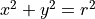 that is centered on the
 axis and a ray
with origin at 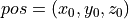 and direction
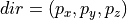. The ray propagation satisfies
a parametric equation
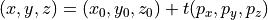.
The intersection is governed by a quadratic equation for distance to
intersection
axis and a ray
with origin at 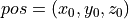 and direction
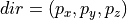. The ray propagation satisfies
a parametric equation
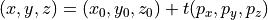.
The intersection is governed by a quadratic equation for distance to
intersection  :
: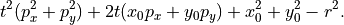
Solution is found as 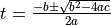, where:
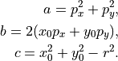
If or 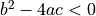 there is no intersection.
- Parameters
r (float) – Cylinder radius. The cylinder is aligned along the z axis.
pos (Tuple[float, float, float]) – Ray origin as a tuple (x, y, z).
dir (Tuple[float, float, float]) – Ray direction as a tuple (x, y, z). Note that the length of the direction vector must equal 1.
- Returns
intersections – Returns None if there is no intersection, else the two distances to the intersection as a tuple (d1, d2).
- Return type
Tuple(float, float) or Tuple(None, None)